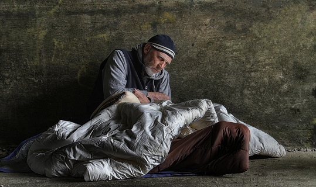

Projet associatif lancé par 5 étudiants de l’IUT de Sceaux.
Nous nous sommes rassemblés autour d’une même idée : soutenir et rassembler !
Notre principal objectif est de venir en aide aux personnes en situation de précarité.
En effet, à cause de la crise sanitaire, les actions pour les aider ont diminué.
Ainsi, nous avons décidé d’organiser une maraude afin de servir des repas chauds et de leur
apporter par la même occasion du réconfort et des encouragements. Nous voulons leur redonner le sourire.
Aujourd’hui, en France, on estime le nombre de sans-abris à environ 300 000, contre 145 000 en 2012, soit un chiffre qui a doublé en moins de 10 ans. La moitié de ce chiffre représente des personnes se trouvant en Île de France, il est donc impératif de leur venir en aide !
C’est un chiffre que l’on a du mal à imaginer et dont on ne se rend pas forcément compte. La précarité ne touche pas seulement les sans-emploi. En effet, les étudiants, les retraités et les salariés peuvent également connaître des difficultés.
Nous avons pour objectif de récolter au minimum 900€ afin de financer ce projet. Le financement aura pour seul et unique but l’achat de denrées alimentaires et d’accessoires afin de pouvoir distribuer des repas de qualité et convenant à tous :
| Plat | Pâtes bolognaise faîtes maison (Viande halal, coulis tomate, carottes, oignons) |
| Dessert | Compotes de fruit et gâteaux |
| Boissons | Bouteilles d'eaux et café |
| Accessoires | Couverts, gobelets et barquettes |
Les fonds serviront également à l'achat de vêtements et de produits hygièniques.
Chaque don à son importance, avec 2€, vous nous donnez la possibilité d’acheter 1kg de pâtes.
Une nouvelle année et un nouveau projet, je m’appelle Pierre STASSINET. Organisé et pointilleux sur les détails, j'ai pour mission de motiver mon équipe afin d'être toujours performant et de mener à bien ce projet !
Salut a tous ! Moi, c'est Jessy NORTE, on me surnomme Le Ronaldinho de cette équipe. La légende dit que j'ai le même pied droit. Il m'est impossible de manquer un seul match. Je suis très motivé à l'idée de mener ce projet à bien, j'espère que vous pourrez nous apporter votre aide !
Salut, Alexis PERSEILLE. Le Papy du groupe mais le plus sage. Posé, réfléchi, je m'occupe de la trésorerie du groupe.
Moi c’est Marta SOUSA DA COSTA. Comme vous pouvez le voir je suis la seule fille du groupe. J'ai pour but de promouvoir notre projet ! Pour cela, je serai chargé de gérer au mieux la communication à travers nos réseaux.
Bonjour, moi c’est Axel HUBERT. Le rigolo du groupe. Un peu joueur et surtout bosseur, je m’occupe moi aussi de la trésorerie du groupe avec mon papy préféré Alexis. Par la même occasion, je suis chargé des achats d'1 Repas 1 Sourire.
Chaque don compte et a le pouvoir d’aider !
Outre les dons, le simple fait de partager cette initiative peut nous aider à augmenter considérablement notre visibilité !
Je pense que vous avez maintenant toutes les cartes en mains, à vous de jouer !